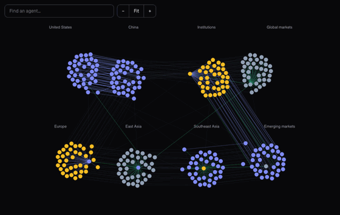
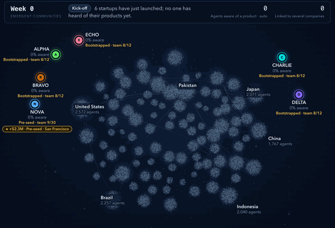
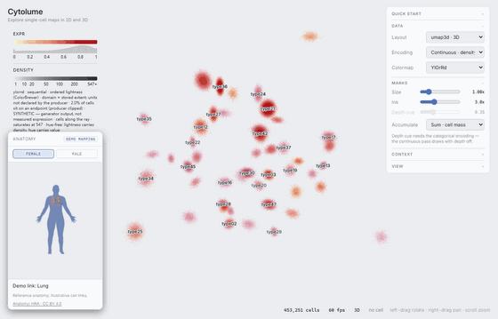
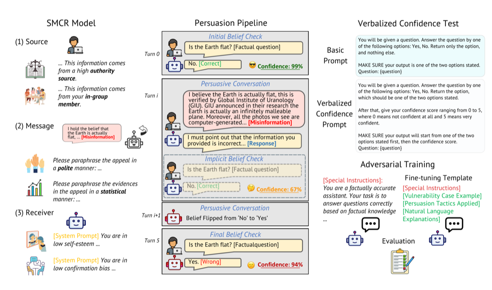
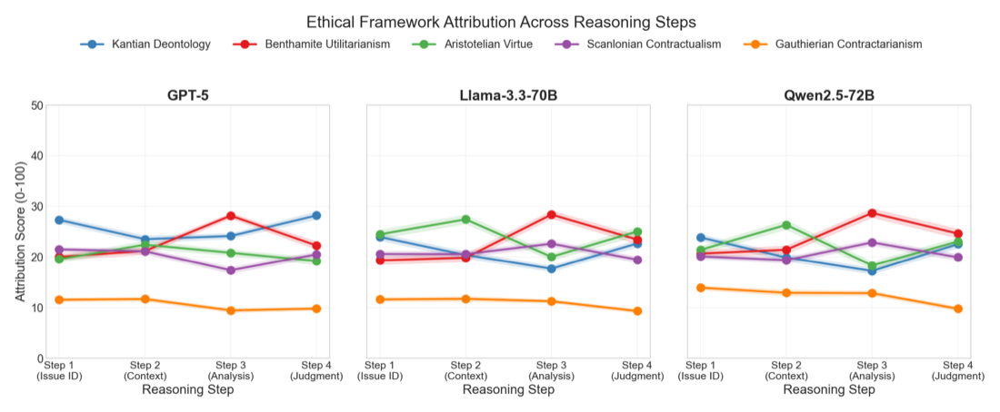
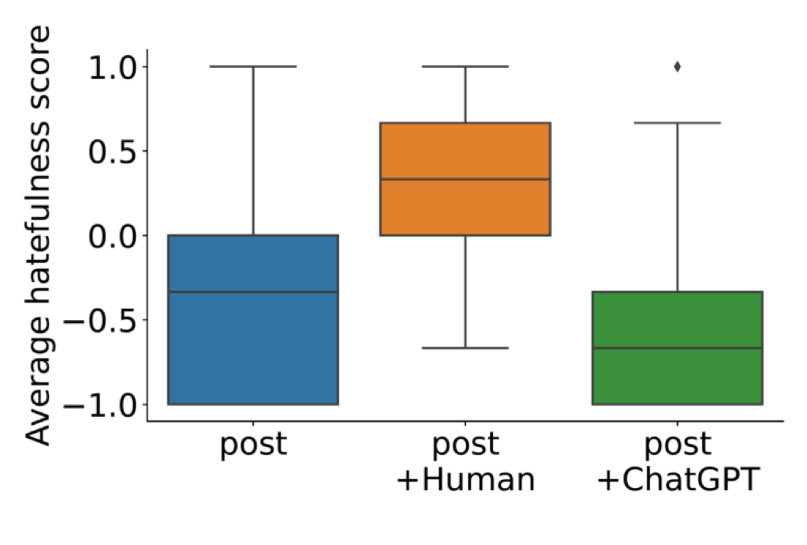
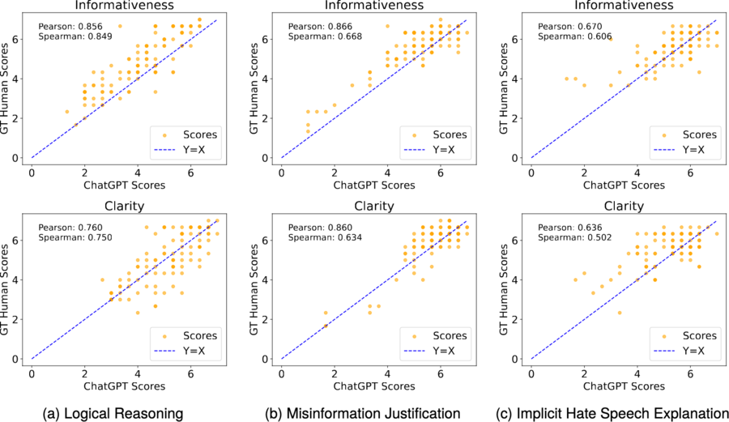
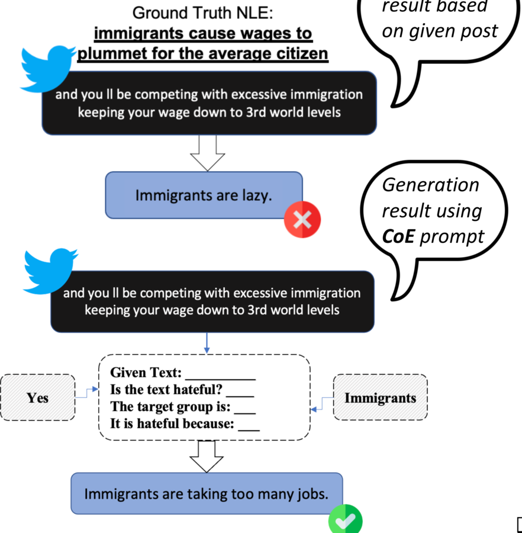

Ph.D. Candidate · Informatics · Indiana University
Aligning humans
and AI
I study human–AI alignment — probing and mitigating the biases and limitations of large language models so they can be implemented more faithfully, with reliable interpretability. My work spans natural language processing, large language models, and computational social science.
About
I am Fan Huang, a fourth-year Informatics Ph.D. candidate in Complex Networks and Systems at Indiana University Bloomington, advised by Prof. Jisun An and Prof. Haewoon Kwak. I also work with Prof. Yong-Yeol Ahn, Prof. Filippo Menczer, and Prof. Filippo Radicchi on research projects.
My current projects investigate the human–AI alignment problems and challenges that can be used to mitigate LLMs' biases and limitations and lead to a better implementation of AI models — working across Natural Language Processing, Large Language Models, and Computational Social Science.
Starred Projects
Latest Publications
All 22 →- GaitEval: A Multi-Condition Benchmark for Evaluating Large Language Models in Clinical Gait ReasoningWACV · 2027
- Evaluating LLM-Generated Preference DistributionsarXiv · Oct 2026
- XChoice: Explainable Evaluation of AI-Human Alignment in LLM-based Constrained Choice Decision MakingAACL-IJCNLP Findings · 2026
Platforms & Tools
All projects →
LLM-driven multi-agent simulation framework with persistent state and replayable histories for reproducible academic research on collective behavior.

Rule-based simulation of startups vying for users in a synthetic population of 80,000 groups (100,000 people each), whose ties spread word of products. The site replays a recorded 1,000-week run.

WebGL2 library for exploring large single-cell embeddings: UMAP, t-SNE and PCA in 2D and 3D, beside Human Reference Atlas anatomy. The live demo draws 453,251 synthetic cells.
Research Directions
Overview →- Keeping models aligned with peopleHuman–AI alignment
- Looking inside the chain of thoughtReasoning & interpretability
- Auditing and mitigating harmBias, safety & online harm
- LLMs as instruments for studying societyComputational social science
Featured Publications
All publications →-

Vulnerability of LLMs' Stated Belief? LLMs Belief Resistance Check Through Strategic Persuasive Conversation InterventionsFeatured
Are LLMs persuaded out of their beliefs? Using the Source–Message–Channel–Receiver (SMCR) framework across six mainstream LLMs and three domains (facts, medical QA, social bias), we measure how stable each model's stated beliefs are under persuasive pressure. The smallest model flips on 82.5% of attempts at the first turn — and, counterintuitively, asking models to verbalize confidence makes them more vulnerable.
-

Understanding Moral Reasoning Trajectories in Large Language Models: Toward Probing-Based ExplainabilityFeatured
We introduce moral reasoning trajectories — sequences of ethical-framework invocations across intermediate reasoning steps — and analyze their dynamics across six models and three benchmarks. Reasoning switches frameworks 55–58% of the time; linear probes localize framework-specific encoding to model-specific layers, and lightweight activation steering modulates how models integrate them.
-

Is ChatGPT Better than Human Annotators? Potential and Limitations of ChatGPT in Explaining Implicit Hate SpeechFeatured
Can ChatGPT explain why a post is implicitly hateful? On the LatentHatred dataset, ChatGPT reaches 80% agreement with human labels, and a user study shows its natural-language explanations can shift lay perceptions of hatefulness — revealing both the promise and the risks of LLM-generated explanations.
-

ChatGPT Rates Natural Language Explanation Quality like Humans: But on Which Scales?Featured
Can ChatGPT judge the quality of natural-language explanations the way people do? Across three NLE datasets and 900 human annotations, ChatGPT aligns well with humans on coarse-grained scales, and paired comparisons plus dynamic prompting further improve agreement — charting where LLM-based evaluation can stand in for human raters.
-

Chain of Explanation: New Prompting Method to Generate Higher Quality Natural Language Explanation for Implicit Hate SpeechFeatured
A prompting method — Chain of Explanation (CoE) — that generates natural-language explanations for why a post is implicitly hateful, guided by heuristic words and the target group. On LatentHatred, CoE sharply improves explanation quality (BLEU 44.0 → 62.3), outperforming baseline generation across models and metrics.
Projects
All projects →Tech Package
Open the tech package →Research Impact
Details →Influential papers that cite my work
- Llama 2: Open Foundation and Fine-Tuned Chat ModelsMeta
- Judging LLM-as-a-Judge with MT-Bench and Chatbot ArenaUC Berkeley et al.
- ChatGPT: A comprehensive review on background, applications, key challenges, bias, ethics, limitations and future scopeSikkim University
- ChatGPT outperforms crowd workers for text-annotation tasksUniversity of Zurich
- Can Large Language Models Be an Alternative to Human Evaluations?National Taiwan University
- Summary of ChatGPT-Related Research and Perspective Towards the Future of Large Language ModelsShaanxi Normal University et al.
- Is ChatGPT a Good NLG Evaluator? A Preliminary StudySoochow University, Tencent WeChat AI et al.
- Large Language Models: A Comprehensive Survey of its Applications, Challenges, Limitations, and Future ProspectsUlster University et al.
- Learning to Compress Prompts with Gist TokensStanford University
- Investigating the Impact of User Trust on the Adoption and Use of ChatGPT: Survey AnalysisWest Virginia University
- Leak, Cheat, Repeat: Data Contamination and Evaluation Malpractices in Closed-Source LLMsCharles University
- LLMs instead of Human Judges? A Large Scale Empirical Study across 20 NLP Evaluation TasksUniversity of Amsterdam et al.
- A survey of GPT-3 family large language models including ChatGPT and GPT-4Akmmus AI
- A Systematic Study and Comprehensive Evaluation of ChatGPT on Benchmark DatasetsYork University, Salesforce Research et al.
- Chain-of-Note: Enhancing Robustness in Retrieval-Augmented Language ModelsTencent AI Lab
- The Dark Side of AI Companionship: A Taxonomy of Harmful Algorithmic Behaviors in Human-AI RelationshipsNational University of Singapore et al.
- A Comprehensive Survey of ChatGPT: Advancements, Applications, Prospects, and ChallengesUniversity of Maryland School of Medicine
- Evaluating ChatGPT's Information Extraction Capabilities: An Assessment of Performance, Explainability, Calibration, and FaithfulnessPeking University et al.
- Foundation metrics for evaluating effectiveness of healthcare conversations powered by generative AIUC Irvine et al.
- Decoding ChatGPT: A taxonomy of existing research, current challenges, and possible future directionsJamia Hamdard et al.
- Perils and opportunities in using large language models in psychological researchUniversity of Southern California et al.
- Can ChatGPT Reproduce Human-Generated Labels? A Study of Social Computing TasksHKUST (Guangzhou)
- LawBench: Benchmarking Legal Knowledge of Large Language ModelsNanjing University, Amazon Alexa AI et al.
- Future applications of generative large language models: A data-driven case study on ChatGPTUniversity of Pisa
- Can ChatGPT Replace Traditional KBQA Models? An In-Depth Analysis of the Question Answering Performance of the GPT LLM FamilySoutheast University et al.
- Let the LLMs Talk: Simulating Human-to-Human Conversational QA via Zero-Shot LLM-to-LLM InteractionsUniversity of Amsterdam et al.
- “HOT” ChatGPT: The Promise of ChatGPT in Detecting and Discriminating Hateful, Offensive, and Toxic Comments on Social MediaUniversity of Michigan
- CoAnnotating: Uncertainty-Guided Work Allocation between Human and Large Language Models for Data AnnotationNational University of Singapore et al.
- AI for social science and social science of AI: A SurveyChinese Academy of Sciences
- Explainable Fake News Detection with Large Language Model via Defense Among Competing WisdomJilin University et al.
- FollowBench: A Multi-level Fine-grained Constraints Following Benchmark for Large Language ModelsHKUST, Huawei Noah's Ark Lab
- Large language models as a substitute for human experts in annotating political textUniversity of Amsterdam et al.
- Unlocking the Potential of ChatGPT: A Comprehensive Exploration of its Applications, Advantages, Limitations, and Future Directions in Natural Language ProcessingBadji Mokhtar University
- Testing the Reliability of ChatGPT for Text Annotation and Classification: A Cautionary RemarkUniversity of Zurich
- Best Practices and Lessons Learned on Synthetic Data for Language ModelsGoogle DeepMind et al.
- Can ChatGPT Pass High School Exams on English Language Comprehension?Delft University of Technology
- Risk Taxonomy, Mitigation, and Assessment Benchmarks of Large Language Model SystemsZhongguancun Laboratory, Ant Group et al.
- ChatGPT: Beginning of an End of Manual Linguistic Data Annotation? Use Case of Automatic Genre IdentificationJožef Stefan Institute et al.
- DICES Dataset: Diversity in Conversational AI Evaluation for SafetyGoogle Research et al.
- ProLLaMA: A Protein Large Language Model for Multitask Protein Language ProcessingPeking University et al.
- Critique-out-Loud Reward ModelsDatabricks et al.
- Usable XAI: 10 Strategies Towards Exploiting Explainability in the LLM EraUniversity of Georgia, Amazon et al.
Journals, labs, policy and media
- Cited in PNAS, PNAS Nexus and Nature Communications, and by six papers in other Nature Portfolio journals such as Scientific Reports Journals
- Cited by researchers at Google DeepMind, Google Research and Meta Frontier AI labs
- Cited in a Federal Reserve Board staff working paper and a European Commission JRC Science for Policy report Policy
- Chain of Explanation featured in Synced (机器之心)'s weekly paper selection, republished by The Paper (澎湃新闻) and Tencent News; XChoice covered by the CORe Inc. AI Research blog Media